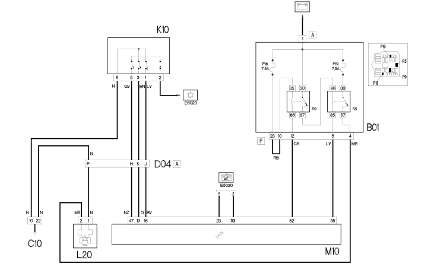

E6021 COMPRESSOR ENGAGEMENT - WIRING DIAGRAM
- Path
- Electrical equipment > 1 ELECTRICAL FUNCTIONS > E60 CLIMATE CONTROL SYSTEM > E6021 COMPRESSOR ENGAGEMENT > E6021 COMPRESSOR ENGAGEMENT - WIRING DIAGRAM
- Kind
- wiring diagram
- Applies to
- engines: 1.9 DIESEL; all production periods
- Interactive page
- https://sloeber94.github.io/elrnDB-fDbl/en/#/223003118
Applies to: engines: 1.9 DIESEL; all production periods
Wiring diagram

COMPONENTS
Component code | Name | Assembly reference |
|---|---|---|
Engine compartment junction unit | - | |
Engine compartment junction unit | ||
Front left earth | - | |
Front/engine coupling | - | |
Front/engine coupling | ||
4 stage pressure switch | - | |
4 stage pressure switch | ||
Air conditioning compressor "on" electromagnet | - | |
Air conditioning compressor electro-magnet | ||
Engine management ECU |
Topics linked from this page (10)
- 1056B MULTI-POINT INJECTION SYSTEM (MPI)
- 1060G pressure pump electric control
- 5040B system safety check devices
- 5505A multi-function components
- B001 JUNCTION UNIT
- C010 LEFT FRONT EARTH
- D004 FRONT/ENGINE COUPLING
- K010 FOUR STAGE PRESSURE SWITCH
- L020 AIR CONDITIONING COMPRESSOR ENGAGEMENT SOLENOID
- M010 ENGINE MANAGEMENT ECU